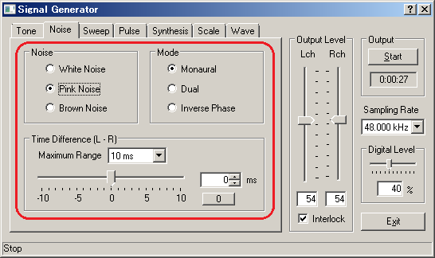
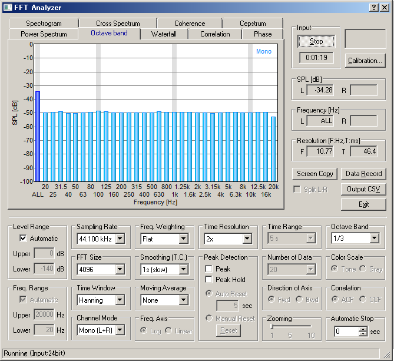

DSSF3 > RA > Operation Guide > Adjustment before a measurement
Soundcard measurement
Next, the frequency response of the soundcard is measured by using the pink noise and the octave band analyzer. Leave the configurations as in the previous measurement, and output the pink noise on the SG.

The vertical axis is zoomed in between -10 and -60 dB. The sound level is expressed by the relative level with the maximum input as 0 dB. In general, the tolerance level of the frequency response is about -3 dB compared to 1 kHz.

Measurement of the PC's sound device is the starting point of the sound measurement. All measurement can be performed if you can measure your PC correctly. If the performance of your PC's sound device is not good, we recommend you to use a high quality soundboard to perform the correct sound measurement.
DSSF3 > RA > Operation Guide > Adjustment before a measurement